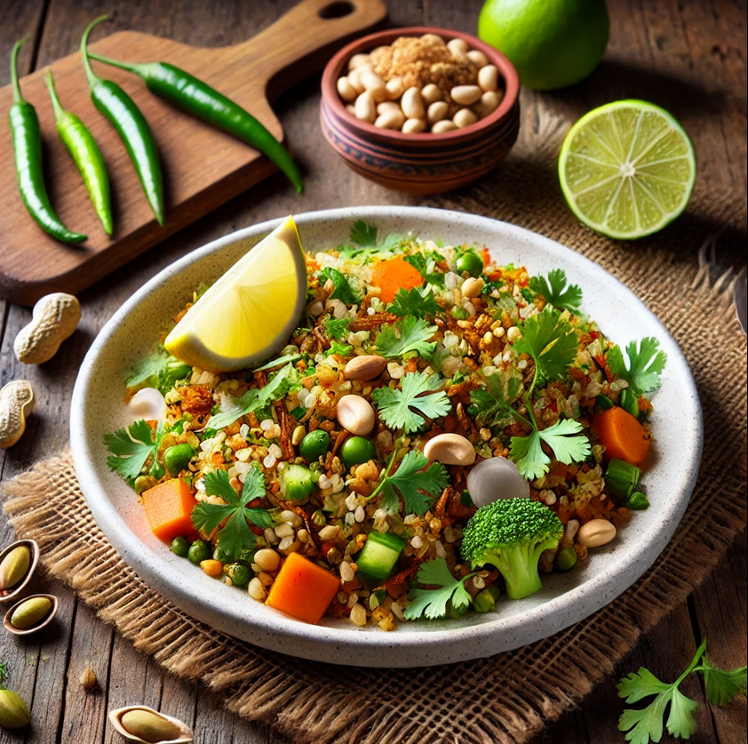

Home
How to make Poha?

This recipie is generated by AI. Make it at your own risk
Description
Vegetable Poha is a quick and nutritious Indian breakfast made with flattened rice, vegetables, and mild spices.
It's light, flavorful, and perfect for a wholesome start to your day.
Ingredients
- 2 cups poha (flattened rice)
- 1 onion (chopped)
- 1 green chili (chopped)
- 1/4 cup peas
- 1/4 cup peanuts
- 1/2 tsp mustard seeds
- 1/4 tsp turmeric powder
- Salt to taste
- Lemon juice and coriander leaves for garnish
Steps
- Rinse poha and drain.
- Sauté mustard seeds, onion, chili, peanuts, and peas in oil.
- Add turmeric, salt, and poha; mix well.
- Garnish with lemon juice and coriander. Serve hot.